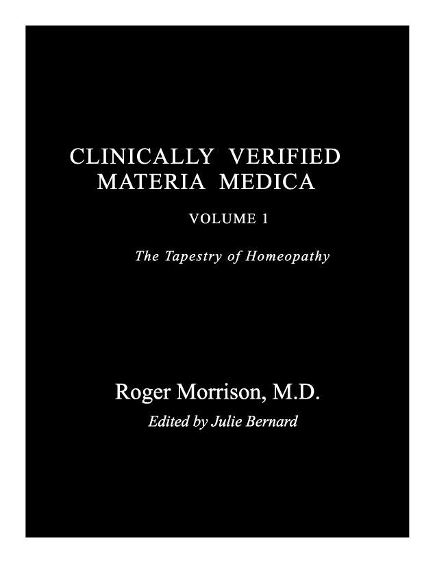

Clinically Verified Materia Medica: The Tapestry of Homeopathy Vol. I
by Roger Morrison, MD
Item # MORCLI
Over 200 homeopathic medicines are described with highlights on those symptoms that have been clinically verified by patients from a prescription from Roger Morrison, MD, one of the most respected and renowned homeopathici physicians in the world.
This NEW BOOK has just arrived!
Over 200 homeopathic medicines are described with highlights on those symptoms that have been clinically verified by patients according to Roger Morrison, MD, one of the most respected and renowned homeopathic physicians in the world.
Reader Review: A Clinically Verified Materia Medica Volume 1 by Roger Morrison, MD
By Andreas N. Bjørndal
In a world increasingly dominated by screens and fleeting information, it is a genuine pleasure to sit down with a book that invites the reader to join Roger Morrisons reflections, learning, broad knowledge and deep engagement.
A Clinically Verified Materia Medica, Volume 1 by Roger Morrison, MD, is just such a book—a rich, clinically grounded journey through the landscape of both classic and lesser-known homeopathic remedies. This isn’t just another Materia medica. It’s a transformative work that sets a new benchmark for trusted reference in modern homeopathic practice.
A New Standard in Homeopathic Literature
Building on the foundation of his much-loved Desktop Guide, Morrison has created something extraordinary—an evolution that combines the breadth of Clarke’s three-volume set, the cutting-edge approach of Farrington, and a century’s worth of maturation upgrading it all with the contemporary knowledge base. But most notably, he has added something revolutionary: verification from cured cases.
This is the first Materia medica that goes beyond traditional provings. Through decades of meticulous clinical case collection with Nancy Herrick, Roger Morrison presents remedy portraits based on verified, real-world healing. These are not just theoretical outlines—they are living, breathing pictures informed by the voices and experiences of actual patients. Remedies come alive, no longer the hundred-year static descriptions but evolving insights confirmed through practice.
Why This Book Stands Out
- Clinically Verified, Not Just Theoretical:
Morrison’s approach brings a long-held dream to life: a materia medica grounded not just in provings but in clinical confirmation. The result is a knowledge base that is both contemporary and deeply rooted.
- Thoughtfully Structured and Accessible:
Despite its 843 pages, the book is well-organized and easy to navigate, making it a user-friendly yet substantial resource for both students and experienced practitioners.
- Actionable, Clear, and Insightful:
Whether you’re exploring rare gems or revisiting old staples, Morrison offers clear, nuanced, and practical guidance for remedy selection grounded in verified healing.
- Inspirational and Groundbreaking:
In Morrison’s own words, Kent should be read once a year and Clarke every three—now we can say: just read Morrison again as soon as you finish. He has created a new standard, redefining what solid homeopathic knowledge can be.
A Legacy in the Making
This work is more than a book—it’s the fruition of decades of dedicated clinical work, and a testament to what homeopathy can be when theory meets experience. It’s a tribute to Hahnemann’s original vision, elevated to the next level. Hahnemann introduced provings as the gold standard of remedy information; Morrison has now established proof of the provings, verified through successful prescriptions.
The gratitude and impact of this work go far beyond the homeopathic profession—it touches the lives of those seeking healing through remedies that are now described with more precision, clarity, and confidence than ever before.
“I haven’t felt this excited about a book since Stolen Essences—nor have I learned so much about each remedy since then. Morrison’s new work is a true treasure trove for anyone passionate about homeopathy.”
Add A Clinically Verified Materia Medica to your library and experience the next generation of materia medica—where classical tradition meets clinical confirmation, and remedies come alive through the voices of the healed.
Congratulations, Roger Morrison—on a masterpiece that will serve as a trusted companion for generations of homeopaths.
Foreword by Rajan Sankaran…
It is a great honor for me to write the foreword for this modern classic, created by someone I deeply respect, admire and love.
In homeopathy, our knowledge of remedies is largely shaped by provings, toxicology and the substance’s origins. This is a more conventional, left brain way of approaching the Materia Medica. In the last four decades, a deeper, more conceptual understanding of the remedies has emerged. This development was initiated, among others, by George Vithoulkas (to whom this book is rightfully dedicated), who through his remarkable teachings and writings inspired a whole generation of homeopaths including Dr. Morrison and myself.
Some of the others include Jan Scholten, Massimo Mangialavori, Jeremy Sherr, Jayesh Shah, Nancy Herrick, Anne Schadde, Misha Norland, Bill Gray, Frederik Schroyens and David Warkentin.
Over the past three decades, this group of young turks expanded homeopathy into a more right brain understanding of remedies, each developing a specific area within it. Popular among the approaches was the Sensation Method where remedies (and patients) are viewed from the perspective of their core experience or “Sensation.” Such experience is categorized into Kingdoms, Sub-kingdoms, Miasms and more recently, Superclasses. I mention this method particularly since its ideas form an important part of this book.
Whatever the approach, for most practitioners, clinically confirmed findings – whether in the realm of Symptoms or Sensations and Themes – are of great importance. These realworld confirmations separate the wheat from the chaff. Historically too, these confirmed symptoms and clinical observations have been given higher rankings in the repertory and become keynote symptoms in the Materia Medica.
What sets Dr. Morrison’s work apart is his openness to both conventional and contemporary approaches. Significantly, he mentions that his two mentors are George Vithoulkas and myself. As I understand, the two of us represent these dual approaches:
Vithoulkas with his conventional or factual perspective, and myself with a more contemporary or conceptual one. Dr. Morrison thus shows an openness to knowing both sides of the remedy (and patient). Consciously or unconsciously, all homeopaths use both sides. While Vithoulkas is known for his conventional approach, he has also written and spoken about the Essence of remedies, identifying the central thread that strings the various symptoms of the remedy together. While I am known for my conceptual approach, I have done detailed provings of several remedies as well as use the repertory extensively in my practice. If we merely use one side to identify the remedy, we will remain uncertain. Dr. Morrison beautifully merges these views in his practice and in this book.
Mastery of case taking which requires skill, patience and training, is essential for capturing these aspects in a patient. Familiarity with advanced case taking methods, such as the Sensation Method and WISE processes, is of great value. Once all of a patient’s aspects are clear, you can approach remedy selection with greater accuracy. A book that gathers all these aspects of each remedy in one place becomes an invaluable resource for practitioners, and Dr. Morrison’s book does just that.
I am glad to note that this book includes most of these aspects of each remedy and much more. It includes themes, clinical observations of patients, etc. that were recurrent in cases of the remedy. What is important to note is that these are not mere theories, but clinically verified information and thus have the authenticity needed to rely on them. Since it covers all aspects of the remedy, it will be of value irrespective of one’s way of practising homeopathy.
Clinically verified observations like these provide reassurance through real-life practice, guiding us to make more informed prescriptions. Many authors, such as Allen (Keynotes) and Phatak (Materia Medica), have emphasized the importance of verified symptoms. In my book The Soul of Remedies, I highlighted many confirmatory symptoms based on clinical experience. Some were well known; others were uncovered during practice. For example, I’ve noticed that many Calcarea Silicata cases present with cold, moist fingertips and a dark band on the margins gums – observations not found in earlier works.
For a further example, it is useful in practice to know that Thuja patients often exhibit hair in unusual places. Many Thuja cases I’ve seen have hair growing from the ears or the middle digits of the fingers. These aren’t proving symptoms but are clinical observations handed down through generations. Likewise, Thuja has been effective in cases of warts and tumors.
These observations help the clinician to identify or confirm Thuja as the remedy. Similarly, observations from a Sensation perspective can be of much value. Thuja, being from the conifer family, carries a sensation of fragility, as though easily broken. In my clinical experience, Thuja patients often fear divorce or family separation, feeling that the unity they rely on is fragile and could easily fall apart.
I can offer several more examples from my practice: Arsenicum Album patients often say “God bless you” and are suspicious of their family members, sometimes thinking they’re being stolen from. Lycopodium patients often say, “I am so grateful to you.” Stramonium patients tend to wear black, Medorrhinum patients in India crave the street food pani puri, Strontium Carbonicum patients crave pizza. Elaps patients describe an icy cold sensation in their chest when drinking cold liquids, while Ignatia patients love the scent of jasmine.
Every patient who has that symptom needs that particular remedy (not everyone who craves pizza needs Strontium Carb), nor is it mandatory that the symptom be present in every patient of a given remedy. Yet when they do, they lend confidence to the prescription.
It is valuable to collect these clinical insights from various homeopaths both past and present, and organize them into a single resource. Fortunately, Dr. Roger Morrison has done exactly that in this remarkable book.
Dr. Morrison’s earlier work, Desktop Guide, has long been an essential resource for practitioners. But this latest work, Clinically Verified Materia Medica, takes it to a much higher level (or should I say a higher potency!). This book builds on the foundation of the Desktop Guide and incorporates modern perspectives on remedies including Sensation, Kingdoms, Themes and clinical cases, as well as symptoms that have been clinically verified or newly discovered.
In recent years, I’ve come to realize that selecting the right remedy involves matching five key aspects of the patient and the remedy. These include Superclass, Kingdom/Sub-kingdom, Miasm, Characteristic Symptoms and Keynotes/Source Qualities. I have also found that one can categorize patient information using the “Seven Levels of Experience,” which encompass Diagnosis (pathology), Local Symptoms, Emotional/Psychosomatic Symptoms, Delusions (including dreams, fears and situations), General Symptoms, Sensations and Energy Patterns.
If one is using the Sensation Method, it is gratifying to read what Dr. Morrison has seen as a recurrent feature in a particular remedy. As an example, here is what the book says about Actaea Spicata: “The patient complains of being highly sensitive – meaning easily hurt, wounded or offended.” This can be understood by knowing that this remedy is a part of the Ranunculaceae family which includes Pulsatilla and Staphysagria which are also highly sensitive, especially to being offended. That they are easily hurt is a feature of the first Superclass where small things affect them. While this aspect of Actaea Spicata can be understood, it is good to see it in this book as clinically verified information. However, there is more. Dr. Morrison mentions about Actaea Spicata that, “He needs the good opinion of others and often depends upon his family – unable to be contented when alone or away from his loved ones (6 of the cases reviewed mentioned a strong need for praise and approval).” Such precise observation derived from cases is nowhere to be found except in this book, and can be a very useful confirmation of the remedy in clinical practice. It is also worth adding these symptoms into the repertory and the software, since many symptoms of remedies in the past have come from clinical observations and this is a valid source, especially if carefully and repeatedly recorded by someone, such as in this book.
Another example is of the remedy Alumina where it states, “Alumina is found at the point of the 3rd periodic row where he cannot simply accept the identity and choices his parents wish for him to assume – however much he may long to do so. Yet, he is unable to find an authentic identity from within. ‘I don’t know who I am, I have absolutely no idea!’ as one patient cried. In the early stages, this is reflected in a feeling of being lost, of constantly trying to find his niche in the world. The frequent refrain of the patient is, ‘I am trying to find myself.’” It is so reassuring to know that the conceptual idea of Alumina is confirmed in several cases. It is also very interesting to see the various expressions of this idea through the recurrent expressions in various patients. I must say that it is so very useful to see the remedy in isolation, and also to see it as a part of a larger picture (such as Alumina as a part of the 3rd row of the periodic table).
However, I must strongly suggest that to know the context of Alumina in the remedies of the 3rd row, one must also familiarize oneself with a study of the common qualities of groups of remedies in the plant, mineral and animal kingdoms, as well as sarcodes, nosodes and imponderables. One must also systematically study Superclasses and Miasms. Such a study will mean looking at the group to which the remedy belongs. In this book you can see the remedy as a part of the group. When one understands this from both sides, one can be a true master and will have a much broader view of remedies, giving the flexibility to look at other remedies in the same group to fine tune the right remedy. If one is also familiar with the prominent rubrics of the remedy, the knowledge of the remedy will be more complete. Such an approach will be synergistic. The 3rd row of the periodic table has the themes of identity, care and nourishment. The remedies on the left side such as Natrum and Magnesium lack a sense of identity and depend on others to give them one. Alumina, coming after Magnesium is in a stage of confusion, not knowing if he should adopt the identity given by someone or develop his own. Thus the rubric: “Confusion of identity” in which Alumina is the most prominent remedy. Seen in this context, the observations on Alumina given in this book fall into place and one has the flexibility to look at Natrum and Magnesium, as well as Silica in the case, as well as examine the other remedies in the rubric, “Confusion of identity.”
Such flexibility can be seen most clearly with the Superclasses paradigm. I found that a remedy shares many features with other remedies in the same Superclass across kingdoms. For example, the aggression of Nux Vomica bears resemblance to the violence in Belladonna as well as the dictatorial attitude of Mercurius and the venomous nature of Lachesis, since all these remedies belong to the same Superclass, namely the 6th. If you study the remediesof the same Superclass from this book, you will be able to see the distinct dynamic of that Superclass in each remedy. Once you understand that dynamic, you can look at other remedies in that Superclass and search for one that has the characteristic symptoms of the patient. It is here that the characteristic symptoms and verified phenomenon become the differentiating factors. In this regard, this book becomes of paramount value.
Dr. Morrison has systematically scanned homeopathic literature, scrutinizing the cases of each remedy to identify the repeated symptoms and phenomena that occur most frequently. By shortlisting the most frequently recurring symptoms from clinical cases, Dr. Morrison has created a valuable dimension that will guide practitioners toward more precise remedy selections. He has included the Sensation of each remedy, the miasm, the themes, the mind picture, the general symptoms and the particular symptoms, thus making the picture complete from both conventional and contemporary approaches. He has used strict standards for the inclusion and exclusion of the information and has used a precise statistical approach which he has elaborated in his “Introduction” to the book. His meticulous approach has resulted in a refined and reliable resource that homeopaths can turn to with confidence.
One remarkable aspect of this book is the surprising revelations it offers. For example, while Causticum is traditionally associated with an aversion to sweets, Dr. Morrison’s clinical findings reveal that many cases show a desire for sweets – a detail that challenges our conventional understanding of the remedy. Also, he has observations from several cases that Aurum has a desire for ice cream. Insights like these make his work indispensable to homeopathy.
Dr. Morrison’s book not only deepens and completes our understanding of individual remedies, but also expands the very idea of clinical confirmation. The information is precise, organized and comprehensive. I am also amazed at the number of remedies included in the book, many of which are rare remedies, some of them not finding a mention in the repertories since they have had scanty or no provings. Yet, through informative clinical cases, Dr. Morrison has been able to make them accessible to the profession, pending further provings.
It is with deep admiration and excitement that I introduce this unique work to the homeopathic community. Dr. Morrison’s dedication to advancing our understanding of remedies is truly inspiring. He is a person with a background of systematic learning, equipped with long years of clinical experience, a being with pure intention, high ethical standards and persistence whose (in the words of Tagore) “tireless striving stretches its arms towards perfection.” I know that no one else in our generation could have accomplished such a monumental work, which will no doubt become an essential companion to all who seek to refine their clinical practice with the thorough and complete understanding of each remedy that it offers.
Homeopathy is much needed in today’s world. The holistic and deep healing it offers is invaluable. We need to sharpen its tools, add to its pool of knowledge and take it forward so that we can be more and more precise in our remedy selection and get consistent results in our practice. Dr. Morrison continues to do his best to advance the cause. We look forward to further volumes of this groundbreaking work.
A heartfelt thank you, dear Roger.
—Rajan Sankaran
Mumbai 23rd October, 2024
TABLE OF CONTENTS
Foreword . . . . . . . . . . . . . . . . . . . . . . . . . . . . . . . . . vi
Introduction . . . . . . . . . . . . . . . . . . . . . . . . . . . . . . . xi
About This Book . . . . . . . . . . . . . . . . . . . . . . . . . . . xiii
Abelmoschus . . . . . . . . . . . . . . . . . . . . . . . . . . . . . .1
Abies Canadensis . . . . . . . . . . . . . . . . . . . . . . . . . . .3
Abies Nigra . . . . . . . . . . . . . . . . . . . . . . . . . . . . . . .5
Abroma Augusta . . . . . . . . . . . . . . . . . . . . . . . . . . .7
Abrotanum . . . . . . . . . . . . . . . . . . . . . . . . . . . . . .10
Absinthium . . . . . . . . . . . . . . . . . . . . . . . . . . . . . .14
Acalypha . . . . . . . . . . . . . . . . . . . . . . . . . . . . . . . .17
Aceticum Acidum . . . . . . . . . . . . . . . . . . . . . . . . .18
Aconitum Napellus . . . . . . . . . . . . . . . . . . . . . . . .21
Actaea Spicata . . . . . . . . . . . . . . . . . . . . . . . . . . . .29
Adamas . . . . . . . . . . . . . . . . . . . . . . . . . . . . . . . . .32
Adrenalinum . . . . . . . . . . . . . . . . . . . . . . . . . . . . .37
Aesculus . . . . . . . . . . . . . . . . . . . . . . . . . . . . . . . .39
Aethusa . . . . . . . . . . . . . . . . . . . . . . . . . . . . . . . . .42
Agaricus Muscarius . . . . . . . . . . . . . . . . . . . . . . . .46
Agathis . . . . . . . . . . . . . . . . . . . . . . . . . . . . . . . . . 51
Agnus . . . . . . . . . . . . . . . . . . . . . . . . . . . . . . . . . .53
Agraphis . . . . . . . . . . . . . . . . . . . . . . . . . . . . . . . .57
Ailanthus . . . . . . . . . . . . . . . . . . . . . . . . . . . . . . . .59
Alcoholus . . . . . . . . . . . . . . . . . . . . . . . . . . . . . . .62
Aletris . . . . . . . . . . . . . . . . . . . . . . . . . . . . . . . . . .64
Allium Cepa . . . . . . . . . . . . . . . . . . . . . . . . . . . . .66
Aloe Socotrina . . . . . . . . . . . . . . . . . . . . . . . . . . . .69
Alumina (Aluminum Oxydatum) . . . . . . . . . . . . .74
Alumina Silicata (Aluminum Silicata) . . . . . . . . .82
Ambra Grisea . . . . . . . . . . . . . . . . . . . . . . . . . . . . 85
Ammonium Carbonicum . . . . . . . . . . . . . . . . . . .90
Ammonium Causticum . . . . . . . . . . . . . . . . . . . . .95
Ammonium Muriaticum . . . . . . . . . . . . . . . . . . . .96
Ammonium Sulphuratum . . . . . . . . . . . . . . . . . .99
Amylenum Nitrosum . . . . . . . . . . . . . . . . . . . . .100
Anacardium Orientale . . . . . . . . . . . . . . . . . . . . .103
Anagallis . . . . . . . . . . . . . . . . . . . . . . . . . . . . . . .111
Anantherum . . . . . . . . . . . . . . . . . . . . . . . . . . . .112
Androctonus . . . . . . . . . . . . . . . . . . . . . . . . . . . .115
Angustura . . . . . . . . . . . . . . . . . . . . . . . . . . . . . .121
Anhalonium . . . . . . . . . . . . . . . . . . . . . . . . . . . .125
Anthracinum . . . . . . . . . . . . . . . . . . . . . . . . . . . .131
Antimonium Crudum . . . . . . . . . . . . . . . . . . . . .132
Antimonium Tartaricum . . . . . . . . . . . . . . . . . . .138
Apis . . . . . . . . . . . . . . . . . . . . . . . . . . . . . . . . . . .143
Apocynum Cannabinum . . . . . . . . . . . . . . . . . . .151
Aqua Marina . . . . . . . . . . . . . . . . . . . . . . . . . . . .154
Ara Macao . . . . . . . . . . . . . . . . . . . . . . . . . . . . . .157
Aranea Diadema . . . . . . . . . . . . . . . . . . . . . . . . .160
Aranea Ixobola . . . . . . . . . . . . . . . . . . . . . . . . . .162
Argentum Metallicum . . . . . . . . . . . . . . . . . . . . .165
Argentum Nitricum . . . . . . . . . . . . . . . . . . . . . . .169
Argon . . . . . . . . . . . . . . . . . . . . . . . . . . . . . . . . .180
Aristolochia Clematitis . . . . . . . . . . . . . . . . . . . .183
Arnica Montana . . . . . . . . . . . . . . . . . . . . . . . . .186
Arsenicum Album . . . . . . . . . . . . . . . . . . . . . . . .194
Arsenicum Iodatum . . . . . . . . . . . . . . . . . . . . . .207
Arsenicum Sulphuratum Flavum . . . . . . . . . . . .211
Artemisia Vulgaris . . . . . . . . . . . . . . . . . . . . . . . .213
Arum Triphyllum . . . . . . . . . . . . . . . . . . . . . . . .216
Arundo . . . . . . . . . . . . . . . . . . . . . . . . . . . . . . . .219
Asafoetida . . . . . . . . . . . . . . . . . . . . . . . . . . . . . .221
Asarum Europaeum . . . . . . . . . . . . . . . . . . . . . .225
Asimina . . . . . . . . . . . . . . . . . . . . . . . . . . . . . . . .230
Astacus Fluviatilis . . . . . . . . . . . . . . . . . . . . . . . .232
Asterias Rubens . . . . . . . . . . . . . . . . . . . . . . . . . .234
Atrax Robustus . . . . . . . . . . . . . . . . . . . . . . . . . .238
Atropinum . . . . . . . . . . . . . . . . . . . . . . . . . . . . . .240
Aurum Metallicum . . . . . . . . . . . . . . . . . . . . . . .243
Aurum Arsenicum . . . . . . . . . . . . . . . . . . . . . . .254
Aurum Muriaticum . . . . . . . . . . . . . . . . . . . . . . . 257
Aurum Muriaticum Natronatum . . . . . . . . . . . .261
Aurum Sulphuratum . . . . . . . . . . . . . . . . . . . . .265
Ayahuasca . . . . . . . . . . . . . . . . . . . . . . . . . . . . . .269
Bacillinum . . . . . . . . . . . . . . . . . . . . . . . . . . . . . .273
Bambusa …………………………………….276
Baptisia . . . . . . . . . . . . . . . . . . . . . . . . . . . . . . . .280
Baryta Arsenicosa . . . . . . . . . . . . . . . . . . . . . . . .285
Baryta Bromata . . . . . . . . . . . . . . . . . . . . . . . . . .288
Baryta Carbonica . . . . . . . . . . . . . . . . . . . . . . . . .290
Baryta Iodata . . . . . . . . . . . . . . . . . . . . . . . . . . . .298
Baryta Muriatica . . . . . . . . . . . . . . . . . . . . . . . . .300
Baryta Phosphorica . . . . . . . . . . . . . . . . . . . . . . .303
Baryta Sulphurica . . . . . . . . . . . . . . . . . . . . . . . .306
Belladonna . . . . . . . . . . . . . . . . . . . . . . . . . . . . .309
Bellis Perennis . . . . . . . . . . . . . . . . . . . . . . . . . . .319
Benzoicum Acidum . . . . . . . . . . . . . . . . . . . . . . .323
Benzene (Petroleum) . . . . . . . . . . . . . . . . . . . . .326
Berberis Vulgaris . . . . . . . . . . . . . . . . . . . . . . . . .328
Beryllium . . . . . . . . . . . . . . . . . . . . . . . . . . . . . . . 332
Bismuth Subnitricum . . . . . . . . . . . . . . . . . . . . .335
Blatta Orientalis . . . . . . . . . . . . . . . . . . . . . . . . . .338
Boletus Laricis . . . . . . . . . . . . . . . . . . . . . . . . . . .343
Borax . . . . . . . . . . . . . . . . . . . . . . . . . . . . . . . . . .345
Bothrops Lanceolatus . . . . . . . . . . . . . . . . . . . . .352
Bovista . . . . . . . . . . . . . . . . . . . . . . . . . . . . . . . . .355
Bromium . . . . . . . . . . . . . . . . . . . . . . . . . . . . . . .359
Brucea . . . . . . . . . . . . . . . . . . . . . . . . . . . . . . . . .364
Bryonia . . . . . . . . . . . . . . . . . . . . . . . . . . . . . . . .366
Bufo Rana . . . . . . . . . . . . . . . . . . . . . . . . . . . . . .376
Buteo Jamaicensis . . . . . . . . . . . . . . . . . . . . . . . .383
Cactus . . . . . . . . . . . . . . . . . . . . . . . . . . . . . . . . .389
Cadmium Metallicum . . . . . . . . . . . . . . . . . . . . .395
Cadmium Sulphuratum . . . . . . . . . . . . . . . . . . .398
Caesalpinia . . . . . . . . . . . . . . . . . . . . . . . . . . . . .401
Caladium . . . . . . . . . . . . . . . . . . . . . . . . . . . . . . .403
Calcarea Arsenicosa . . . . . . . . . . . . . . . . . . . . . . .406
Calcarea Bromata . . . . . . . . . . . . . . . . . . . . . . . .411
Calcarea Carbonica . . . . . . . . . . . . . . . . . . . . . . .413
Calcarea Fluorata . . . . . . . . . . . . . . . . . . . . . . . .430
Calcarea Iodata . . . . . . . . . . . . . . . . . . . . . . . . . .436
Calcarea Muriatica . . . . . . . . . . . . . . . . . . . . . . .438
Calcarea Nitrica . . . . . . . . . . . . . . . . . . . . . . . . . .440
Calcarea Phosphorica . . . . . . . . . . . . . . . . . . . . . 442
Calcarea Silicata . . . . . . . . . . . . . . . . . . . . . . . . . 449
Calcarea Sulphurica . . . . . . . . . . . . . . . . . . . . . . 455
Calculus Renalis . . . . . . . . . . . . . . . . . . . . . . . . . 461
Calendula . . . . . . . . . . . . . . . . . . . . . . . . . . . . . . 462
Camphora . . . . . . . . . . . . . . . . . . . . . . . . . . . . . . 466
Cannabis Indica . . . . . . . . . . . . . . . . . . . . . . . . . 473
Cannabis Sativa . . . . . . . . . . . . . . . . . . . . . . . . . 481
Cantharis . . . . . . . . . . . . . . . . . . . . . . . . . . . . . . . 483
Capsicum . . . . . . . . . . . . . . . . . . . . . . . . . . . . . . . 488
Carbo Animalis . . . . . . . . . . . . . . . . . . . . . . . . . . 494
Carbo Vegetabilis . . . . . . . . . . . . . . . . . . . . . . . . . 499
Carbolicum Acidum . . . . . . . . . . . . . . . . . . . . . . 506
Carboneum Oxygenisatum . . . . . . . . . . . . . . . . 508
Carboneum Sulphuratum . . . . . . . . . . . . . . . . . 509
Carcinosin . . . . . . . . . . . . . . . . . . . . . . . . . . . . . . 513
Carduus Marianus . . . . . . . . . . . . . . . . . . . . . . . 526
Carnegia Gigantea . . . . . . . . . . . . . . . . . . . . . . . 529
Cascarilla . . . . . . . . . . . . . . . . . . . . . . . . . . . . . . . 531
Castanea Vesca . . . . . . . . . . . . . . . . . . . . . . . . . . 532
Castor Equi . . . . . . . . . . . . . . . . . . . . . . . . . . . . . 533
Castoreum . . . . . . . . . . . . . . . . . . . . . . . . . . . . . . 535
Caulophyllum . . . . . . . . . . . . . . . . . . . . . . . . . . . 537
Causticum . . . . . . . . . . . . . . . . . . . . . . . . . . . . . . 540
Ceanothus . . . . . . . . . . . . . . . . . . . . . . . . . . . . . . 551
Cedron . . . . . . . . . . . . . . . . . . . . . . . . . . . . . . . . 553
Cenchris . . . . . . . . . . . . . . . . . . . . . . . . . . . . . . . 555
Cereus Bonplandii . . . . . . . . . . . . . . . . . . . . . . . 560
Cereus Serpentinus . . . . . . . . . . . . . . . . . . . . . . . 563
Cerium Oxalicum . . . . . . . . . . . . . . . . . . . . . . . . 564
Cerium Oxydatum . . . . . . . . . . . . . . . . . . . . . . . 565
Chamomilla . . . . . . . . . . . . . . . . . . . . . . . . . . . . 566
Chaulmoograe . . . . . . . . . . . . . . . . . . . . . . . . . . 574
Chelidonium . . . . . . . . . . . . . . . . . . . . . . . . . . . . 574
Chelone . . . . . . . . . . . . . . . . . . . . . . . . . . . . . . . . 580
Chimaphila Umbellata . . . . . . . . . . . . . . . . . . . . 581
China Officinalis . . . . . . . . . . . . . . . . . . . . . . . . . 584
Chininum Sulphuricum . . . . . . . . . . . . . . . . . . . 593
Chloralum . . . . . . . . . . . . . . . . . . . . . . . . . . . . . .596
Chlorum . . . . . . . . . . . . . . . . . . . . . . . . . . . . . . .598
Chocolate . . . . . . . . . . . . . . . . . . . . . . . . . . . . . .600
Chromium Metallicum . . . . . . . . . . . . . . . . . . . .606
Chrysarobinum . . . . . . . . . . . . . . . . . . . . . . . . . .608
Cicuta Virosa . . . . . . . . . . . . . . . . . . . . . . . . . . . .609
Cimex . . . . . . . . . . . . . . . . . . . . . . . . . . . . . . . . .614
Cimicifuga . . . . . . . . . . . . . . . . . . . . . . . . . . . . . .616
Cina . . . . . . . . . . . . . . . . . . . . . . . . . . . . . . . . . . . 624
Cinnabaris . . . . . . . . . . . . . . . . . . . . . . . . . . . . . .629
Cinnamomum . . . . . . . . . . . . . . . . . . . . . . . . . . .632
Cistus Canadensis . . . . . . . . . . . . . . . . . . . . . . . .635
Citrus Vulgaris . . . . . . . . . . . . . . . . . . . . . . . . . . .639
Clematis Recta . . . . . . . . . . . . . . . . . . . . . . . . . . .641
Cobaltum Metallicum . . . . . . . . . . . . . . . . . . . . . 645
Coca . . . . . . . . . . . . . . . . . . . . . . . . . . . . . . . . . . .649
Coccinella Septempunctata . . . . . . . . . . . . . . . . .653
Cocculus . . . . . . . . . . . . . . . . . . . . . . . . . . . . . . .655
Coccus Cacti . . . . . . . . . . . . . . . . . . . . . . . . . . . .665
Cochlearia Armoracia . . . . . . . . . . . . . . . . . . . . .668
Codeinum . . . . . . . . . . . . . . . . . . . . . . . . . . . . . .670
Coffea Cruda . . . . . . . . . . . . . . . . . . . . . . . . . . . .672
Coffeinum . . . . . . . . . . . . . . . . . . . . . . . . . . . . . . 679
Colchicum Autumnale . . . . . . . . . . . . . . . . . . . .680
Collinsonia . . . . . . . . . . . . . . . . . . . . . . . . . . . . . 686
Colocynthis . . . . . . . . . . . . . . . . . . . . . . . . . . . . .688
Comocladia . . . . . . . . . . . . . . . . . . . . . . . . . . . . .695
Conchiolinum . . . . . . . . . . . . . . . . . . . . . . . . . . .697
Conium . . . . . . . . . . . . . . . . . . . . . . . . . . . . . . . .701
Convallaria Majalis . . . . . . . . . . . . . . . . . . . . . . .711
Copaiva . . . . . . . . . . . . . . . . . . . . . . . . . . . . . . . .713
Corallium Rubrum . . . . . . . . . . . . . . . . . . . . . . .715
Corvus Corax . . . . . . . . . . . . . . . . . . . . . . . . . . .717
Corydalis Formosa . . . . . . . . . . . . . . . . . . . . . . . .720
Crataegus . . . . . . . . . . . . . . . . . . . . . . . . . . . . . . .721
Crocus Sativus . . . . . . . . . . . . . . . . . . . . . . . . . . .723
Crotalus Cascavella . . . . . . . . . . . . . . . . . . . . . . .728
Crotalus Horridus . . . . . . . . . . . . . . . . . . . . . . . .738
Croton Tiglium . . . . . . . . . . . . . . . . . . . . . . . . . .746
Cubeba . . . . . . . . . . . . . . . . . . . . . . . . . . . . . . . .750
Culex . . . . . . . . . . . . . . . . . . . . . . . . . . . . . . . . . .753
Cuprum Aceticum . . . . . . . . . . . . . . . . . . . . . . . . 756
Cuprum Metallicum . . . . . . . . . . . . . . . . . . . . . .758
Curare . . . . . . . . . . . . . . . . . . . . . . . . . . . . . . . . .767
Cyclamen . . . . . . . . . . . . . . . . . . . . . . . . . . . . . .770
Cypripedium . . . . . . . . . . . . . . . . . . . . . . . . . . . .779
Dendroaspis Polylepsis . . . . . . . . . . . . . . . . . . . .781
Derris Pinnata . . . . . . . . . . . . . . . . . . . . . . . . . . .786
Digitalis Purpurea . . . . . . . . . . . . . . . . . . . . . . . .788
Dioscorea . . . . . . . . . . . . . . . . . . . . . . . . . . . . . . .795
Dolichos . . . . . . . . . . . . . . . . . . . . . . . . . . . . . . . .798
Doryphora . . . . . . . . . . . . . . . . . . . . . . . . . . . . . .801
Drosera . . . . . . . . . . . . . . . . . . . . . . . . . . . . . . . .804
Dulcamara . . . . . . . . . . . . . . . . . . . . . . . . . . . . . .811
Echinacea . . . . . . . . . . . . . . . . . . . . . . . . . . . . . .817
Elaps . . . . . . . . . . . . . . . . . . . . . . . . . . . . . . . . . .821
Elaterium . . . . . . . . . . . . . . . . . . . . . . . . . . . . . . .828
Equisetum . . . . . . . . . . . . . . . . . . . . . . . . . . . . . . 830
Eupatorium Perfoliatum . . . . . . . . . . . . . . . . . . .831
Eupatorium Purpureum . . . . . . . . . . . . . . . . . . .835
Euphorbia Resinifera . . . . . . . . . . . . . . . . . . . . . .837
Euphrasia . . . . . . . . . . . . . . . . . . . . . . . . . . . . . .839
More from New Advanced Books


![Wondrous Order – Systematic The Table of Homeopathic Plant Remedies — Michal Yakir [YAKWON] (Price to be determined)](../assets/uploads/2026/01/Yakir-500x703.webp)